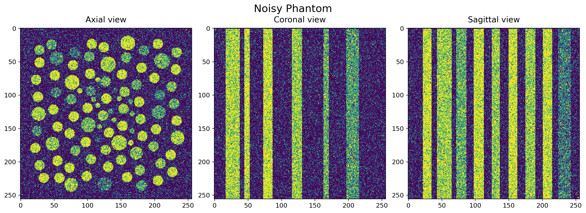
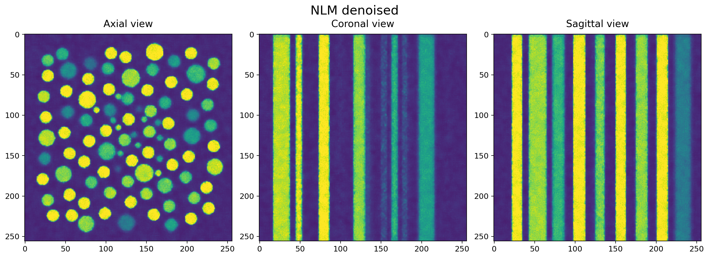

Non-local means denoising#
Description
Non-local means (NLM) denoising reduces noise by averaging pixels or voxels with similar surrounding patches. Instead of smoothing all nearby pixels equally, it gives more weight to those whose local structure resembles the patch being filtered. This helps preserve edges and repeated features in images and volumes.
The following figures show axial, coronal and sagittal views of a phantom before and after NLM denoising.


Fig. 72 The noisy phantom.#


Fig. 73 Recovery using NLM denoising.#
Mathematically, the denoised value at position \(p\) is a weighted average of candidate values within a search window:
where \(S(p)\) contains the selected neighbours and the centre pixel. The patch distance \(d(p,q)\) is the sum of Gaussian-weighted squared intensity differences between the two patches. Similar patches receive larger weights; the centre pixel has weight one. At image boundaries, only valid patch elements are compared, without renormalising the Gaussian weights.
Where and how to use it:
Use httomolibgpu.misc.denoise.non_local_means() to reduce noise in
reconstructed images or volumes, particularly when preserving repeated
structures and fine features is important. The method accepts a float32
CuPy image or volume and returns a new denoised array on the GPU, leaving
the input unchanged. Input values must be finite.
By default, volumes are processed in 3D, using neighbouring slices to
compare patches. Set full_3d=False to denoise each axial slice
independently. A 2D input always uses 2D processing.
import cupy as cp
from httomolibgpu import non_local_means
# A starting point for image intensities approximately in [0, 1].
images = cp.asarray(reconstructed_volume, dtype=cp.float32)
denoised = non_local_means(
images,
h=0.2,
search_radius=2,
patch_radius=1,
num_neighbours=0,
full_3d=True,
)
What are the adjustable parameters:
hControls the level of smoothing. Larger values allow less-similar patches to contribute and can lead to oversmoothing. The value must be positive and is expressed in input intensity units; the method does not normalise the data. Patch distances are summed rather than averaged, so retune this parameter when changing the intensity scale, patch radius or processing dimension. Defaults to 0.1.search_radiusSets the half-width of the search window. The default value of 2 gives a 5 by 5 window in 2D or a 5 by 5 by 5 window in 3D. Larger windows allow more distant matches but increase computation time. Zero returns a copy of the input.patch_radiusSets the half-width of each comparison patch and the standard deviation of its Gaussian weighting. The default value of 1 gives a 3 by 3 patch in 2D or a 3 by 3 by 3 patch in 3D. Larger patches increase computation time and may require a largerh. Zero compares individual pixels.num_neighboursLimits averaging to the strongest non-self matches, together with the centre pixel. The default of zero uses all candidates. A positive value cannot exceed the number of non-centre positions in the search window; fewer matches may be available at image boundaries.full_3dEnables volumetric search windows and patches for a 3D input. Defaults to True. Set it to False to process eachdata[z, :, :]slice independently, reducing computation time while excluding information from neighbouring slices.
Note
Denoising after reconstruction cannot generally recover information lost through undersampling or remove strong reconstruction artefacts. For poor-quality projection data, consider regularisation within an iterative reconstruction method such as FISTA 3D (ToMoBAR).
Note
When processing a volume in chunks with full_3d=True,
include an overlap of search_radius + patch_radius voxels on
each side of every chunked axis, then retain only the chunk interior.
Without overlap, chunk boundaries can introduce differences from
filtering the whole volume. Independent slice processing needs no
overlap along the slice axis.